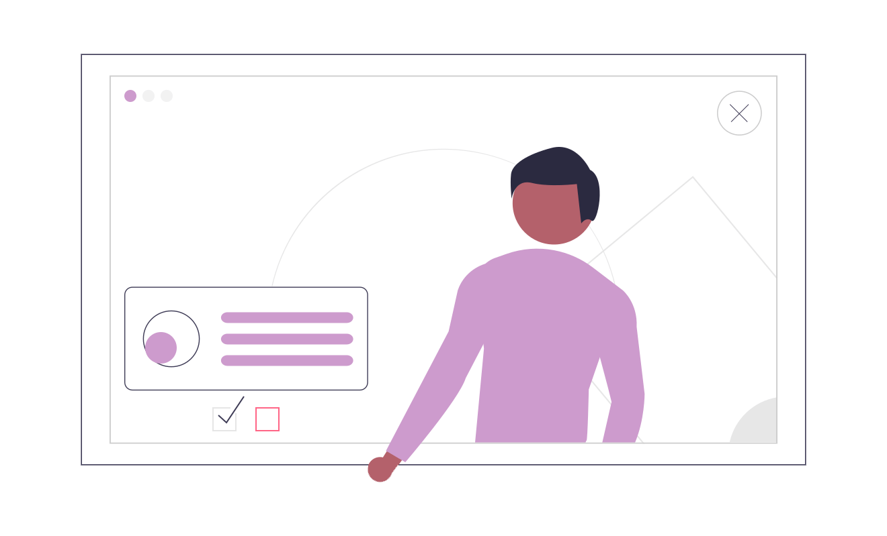

Preguntas Frecuentes.
Queremos que este sea un negocio completamente transparente en todo. :)
Con el fin de adelantarnos en contestar tus preguntas creamos esta sección. Deseamos fuertemente que seas bienvenido a la familia del Sazón de Mamá.

Contamos con un menú vegano que cumple con todos los
requerimientos nutricionales necesarios en una comida, y
contamos con platillos bajos en calorías para las personas que
necesitan cuidar su alimentacion y su peso.
Utilizamos para transportarnos biciletas mecánicas para los
envíos cercanos, y para los envíos más alejados bicicleta
eléctrica. Nuestras emisiones son prácticamente inexistentes :)
No te preocupes más por los residuos, pues nuestros empaques son
100% biodegradables y reciclables, además de que contamos con la
opción de utilizar tus propios tuppers para la comida (nosotros
los recojemos y después te los enviamos con rica comida)
Si no logramos responder tus dudas, no dudes en comunicarte con nosotros en "Contacto" , enviarnos un correo o comunicarte con nosotros por whastapp (whatsapp unicamente en horario de 6pm a 11 pm)